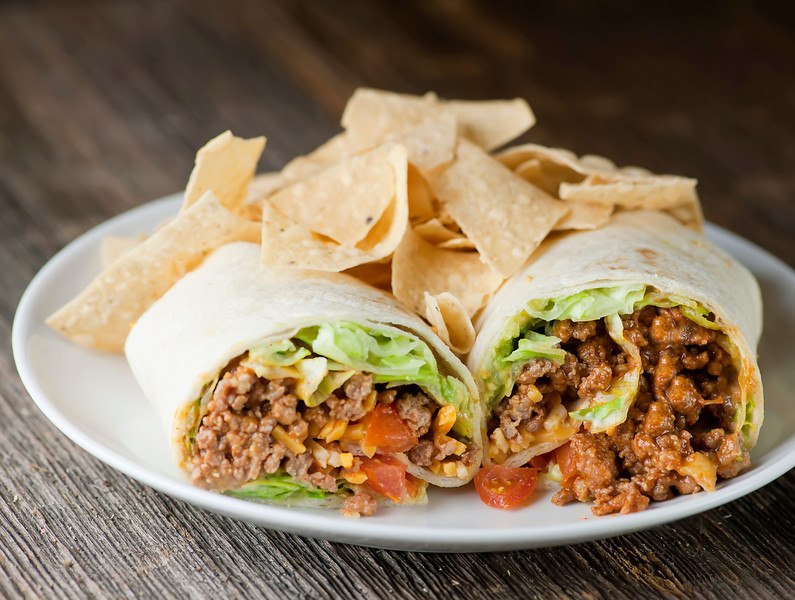

Taco
Oppskrift
- Kutt opp grønnsakene og åpne maisboksen.
- Brun kjøttdeigen.
- Hell litt vann over kjøttdeigen og bland inn tacokrydderet.
- Når det meste av vannet er borte er kjøttdeigen klar.
- Legg halvparten av alt på en tacolefse, rull den opp og spis. Gjenta for lompe 2.